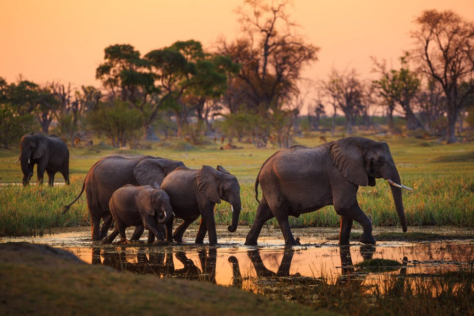

Elephants are gorgeous animals that mainly live in Africa. They have a greyish skin and white tusks that are made out of ivory. Their weight ranges from 6,000 lbs to 13,000 lbs. Their height ranges from 9 ft to 11 ft tall. The lifespan of an elephant depends on its species, but it generally renges around 60-70 years, except for Asian Elephants. Their lifespan is about 48 years.
Unfortunatley, the tusk of an elephant is made out of a very popular substance called ivory whcih could be used to make many things. Because of this, poachers kill elephants to ILLEGALLY sell their tusks, but while they are at it, they also collect the meat and the skin to sell as well. These actions must come to a stop because some elephant species are beginning to go extinct.
